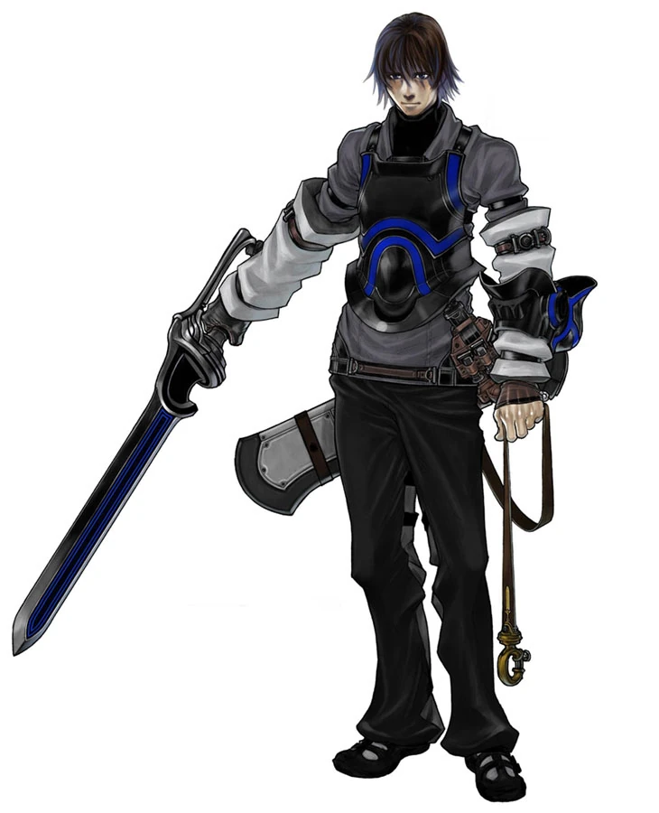

Accueil
Caim
Origine
Fils de roi Gaap, huitième souverain de la lignée du royaume de
Caerleon, Caim vit paisiblement avec sa famille. Il reçoit l'éducation
nécessaire d'un prince et il est également formé à l'utilisation d'armes
diverses, s'entraînant souvent avec son ami d'enfance Inuart. Caim
apprécie énormément son père, l'idolâtrant presque. Ce dernier lui offre
une épée et lui permet d'être à ses côtés durant les batailles.
Rôle
Caim ne cherche pas à sauver des vies, il se jette à corps perdu dans
les affrontements et les combats. Il se laisse ainsi dominer par son
envie de vengeance n'ayant guère le temps de s'attarder sur des
considérations morales ou les conséquences de ses actes. Toutefois, son
pacte avec Angelus lui donnera une lueur de lucidité, une conscience. Le
dragon rouge devient finalement le vecteur de sa fureur, le contraignant
à des massacres servant la sauvegarde du monde et pas simplement sa
propre vengeance.
Le pacte
Lors de la bataille au Bastion de la déesse, Caim se voit infliger une
blessure mortelle. Se trouvant face à la mort, il subsiste tout de même
l'éclat répugnant d'un avenir sous les traits d'un dragon rouge
agonisant dans la cour du bastion. Son aversion pour les dragons est
réelle, chaque dragon lui rappelle la fin tragique de ses parents. Il
contraint le dragon à un choix : le pacte ou la mort immédiate. Le désir
de survivre existe autant chez la bête que l'homme, ils procèdent au
pacte. Cette union improbable va aboutir à des changements profonds dans
leurs êtres. Ils sont désormais liés quelque soit la haine qu'ils
peuvent entretenir l'un envers l'autre.

Et les pseudo-classes alors ? (D'où pseudo déjà ? Caim est juste classe en fait)